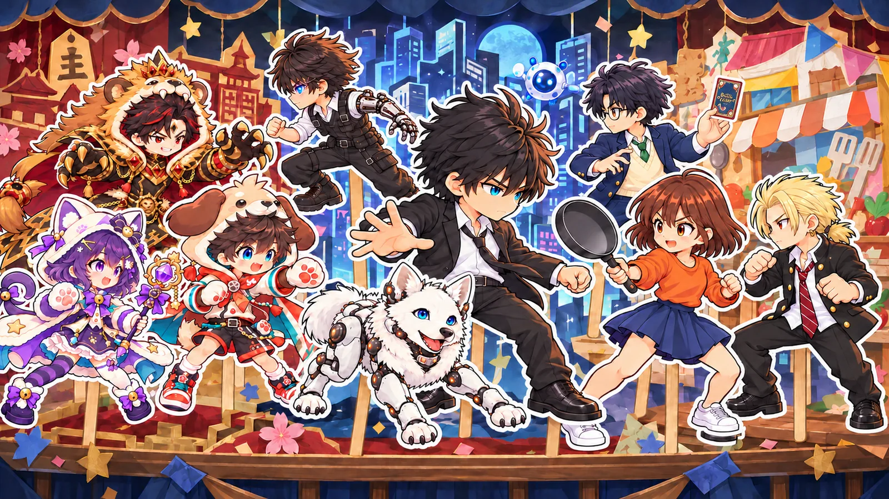
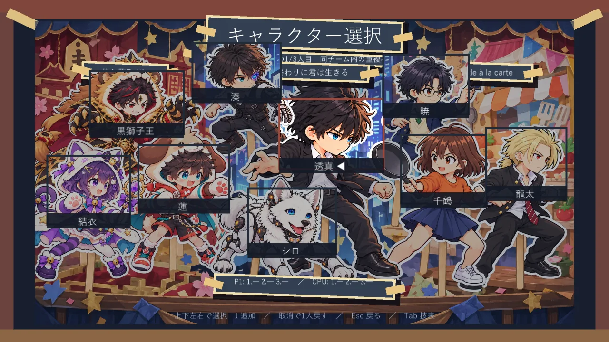
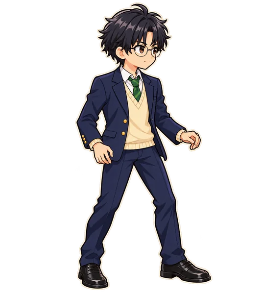
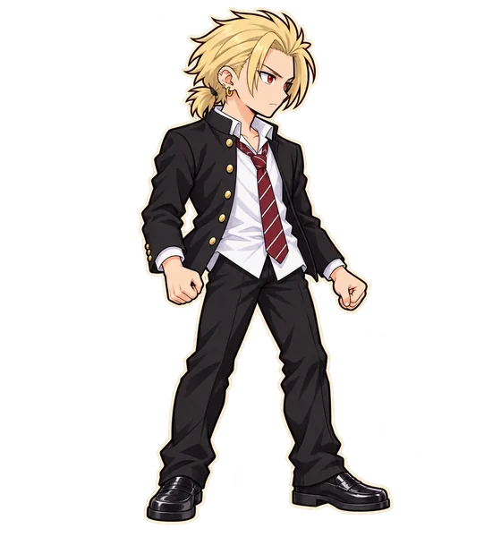
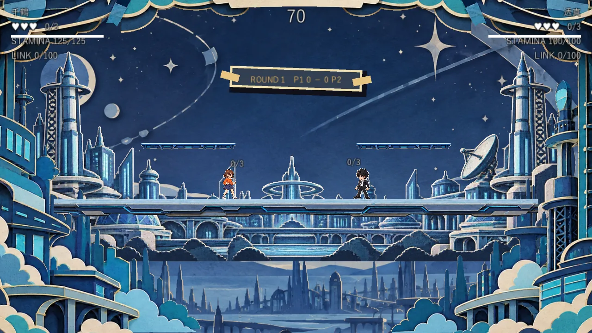
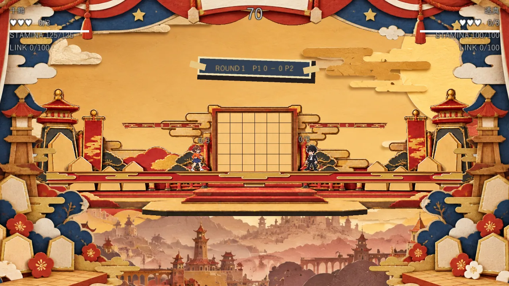
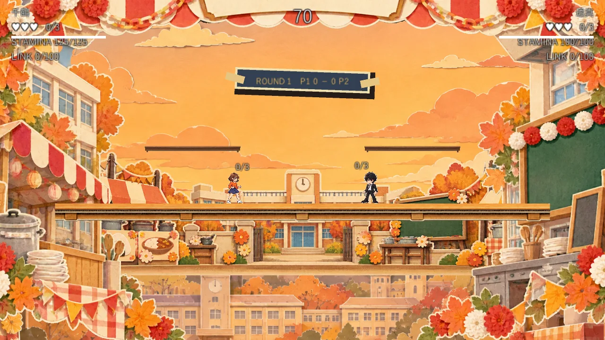

CPUチーム対戦
自分のチーム3人と、CPUのチーム3人を選んで対戦。CPUの強さは「やさしい／ふつう／むずかしい」から選べます。

ANIANI ORIGINAL / 2D PLATFORM FIGHTER
略称：あにバト！！
3つのあにあに作品から集まった9人が、紙の舞台で戦う。
3人ずつのチームを組んで、先に2勝したチームの勝ち！
試作版・開発中 プレイ版・ダウンロードは現在未公開です。
『あにあにバトル！！』は、あにあにが制作する作品のキャラクターたちが、作品の垣根を越えて戦うオリジナルの2D対戦アクション（プラットフォームファイター）です。
参加するのは『星の終わりに君は生きる』『推し駒battle』『Battle à la carte』の3作品から3人ずつ、計9人。厚紙と切り絵を重ねたような「ペープサート（紙人形劇）」風の舞台で、キャラクターのイラストがそのまま動いて戦います。
ハートを削り合う駆け引きに加えて、ステージの外に落ちたら即敗北。時間が残り少なくなると床が消えていき、最後は中央の足場だけが残ります。
今後、あにあにの作品が増えれば参加キャラクターも増える予定です。

自分のチーム3人と、CPUのチーム3人を選んで対戦。CPUの強さは「やさしい／ふつう／むずかしい」から選べます。
同じPCで2人対戦。P1とP2がそれぞれ3人を選びます。キーボード2人、ゲームパッド、その組み合わせで遊べます。
1人ずつ選んで自由に練習。超必殺技のゲージは最初から満タンで、何度でも使えます。速度変更・一時停止・コマ送り・当たり判定の表示にも対応。
BGM・効果音の音量、フレームレート、画面の揺れ、キーコンフィグ、操作説明、チュートリアルなど。対戦中もポーズから開けます。
| 通常攻撃 | 3回当たるとハート1つ（頭上に 0/3 → 3/3 と表示） |
|---|---|
| 特殊攻撃 | ハート1つ |
| 超必殺技 | ハート2つ |
床が消えると落下し、場外に出れば負け。最後まで足場の位置に気を付けよう。
Windows版の初期設定です。設定の「キーコンフィグ」で変更できます。PCブラウザ版は一部のキー（P2・ポーズなど）が異なります。
| 操作 | P1キーボード | P2キーボード | ゲームパッド |
|---|---|---|---|
| 移動 | A / D | ← / → | 左スティック・十字キー |
| 上・下（しゃがみ） | W / S | ↑ / ↓ | 左スティック・十字キー |
| ジャンプ・2段ジャンプ | Space | 右Ctrl | A（×） |
| 通常攻撃（長押しで溜め） | J | Delete | X（□） |
| 特殊攻撃 | K | End | Y（△） |
| ガード | L | PageDown | LT（L2） |
| 回避 | 左Shift | 右Shift | RT（R2） |
| カウンター | I | PageUp | RB（R1） |
| 超必殺技 | U | Home | LB（L1） |
| ダッシュ | F／左右2回 | 右Alt／左右2回 | 左スティック押し込み／左右2回 |
| ポーズ | Esc | Backspace | Start（OPTIONS） |
ゲームパッドはXbox系・PlayStation系に対応予定（実機での確認は開発中）。P2はテンキー（0〜6）でも操作できます。
3作品から3人ずつ、計9人。イラストを押すと攻撃中の姿に切り替わります。
湊の兄
弟を思う気持ちを抱えながら、管理AIに守られた世界で自分の道を歩む。
透真の弟
左目と左腕に機械を備え、仲間とともに生きる。
犬型AI
白い体と青い瞳をもつ犬型AI。人とAIの関係を映す存在。
犬の男の子／飛車
純粋無垢で一直線。結衣とは張り合うライバル。固有スキルは「直線番長」。
猫の女の子／角
気分屋で誇り高い。蓮にはつい対抗心が出る。固有スキルは「斜めバリア」。
ライオンの首領／王
黒金会を率いる絶対王。部下の豹妬レイラ・銀狼シオン・鹿角ノアを呼び出して戦う。
暁のライバル
「もう一回勝負！ 今度は私が勝つから！」 本作では私服姿で参戦。

攻撃イラスト制作中千鶴のライバル
「しゃあないな。ほな、相手したるわ。」

攻撃イラスト制作中幼馴染編のキャラクター
「上等だ。やるからには、負けるつもりはねぇよ。」
技や演出は本作だけのクロスオーバー表現で、それぞれの原作の設定ではありません。
3作品をモチーフにした3つの舞台。地形と当たり判定はどれも同じで、大きな床1つと上の小さな足場2つでできています。



開発中のため、ルール・技・画面は今後変わることがあります。サポートキャラやオンライン対戦は最初の版には入りません。
試作版・開発中 プレイ版・ダウンロードは現在未公開です。